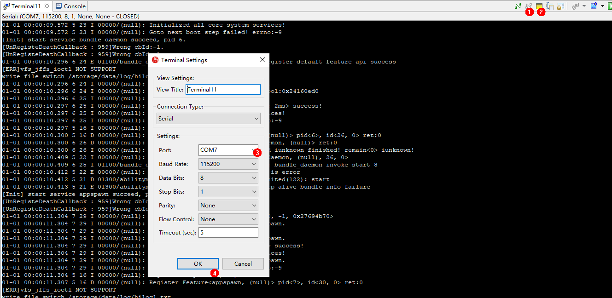
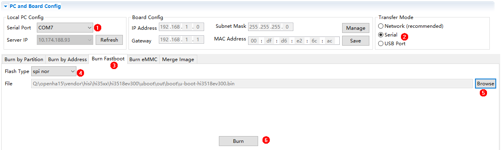
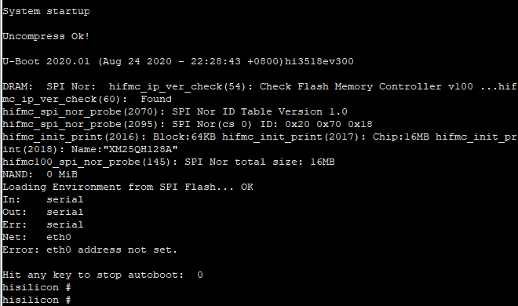
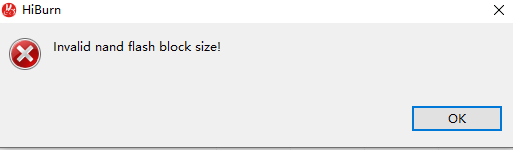
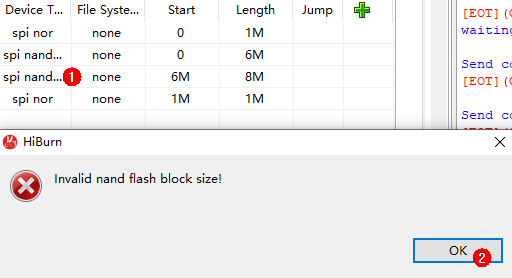

FAQs¶
What should I do when no command output is displayed?
Symptom
The serial port shows that the connection has been established. After the board is restarted, nothing is displayed when you press Enter.
Possible Cause 1
The serial port is connected incorrectly.
Solutions
Change the serial port number.
Start Device Manager to check whether the serial port connected to the board is the same as that connected to the terminal device. If not, perform the following steps to change the serial port number.
Figure 1 Procedure for changing the serial port numberDisconnect from the current serial port.
Click Settings.
Change the serial port number in the dialog box and click OK.
Press Enter in the dialog box to check whether any command output is displayed after the connection is established.
Possible Cause 2
The U-boot of the board is damaged.
Solutions
Burn the U-boot.
If the fault persists after you perform the preceding operations, the U-boot of the board may be damaged. You can burn the U-boot by performing the following steps:
Obtain the U-boot file.
 NOTICE:
NOTICE:The U-boot file of the board can be obtained from vendorhisihi35xxhi3518ev300ubootoutbootu-boot-hi3518ev300.bin in the open-source package.
Use HiTool to burn the U-boot.
Figure 2 Procedure for burning the U-boot using HiToolSelect the COM7 serial port.
Select Serial for Transfer Mode.
Select Burn Fastboot.
Select spi nor for Flash Type.
Click Browse and select the corresponding U-boot file.
Click Burn to start burning.
Power off the board and then power it on. Connect the serial port after the burning is complete. Serial ports shown in the following figure are displayed after the U-boot is burnt.
Figure 3 Serial port displayed after the U-boot is burnt
What should I do when an error is reported when the U-Boot is burnt using HiTool?
Symptom
Figure 4 Burning error

Possible Causes
The flash type selected by HiTool is incorrect.
Solutions
Change the flash type in the area marked with 1 in the following figure.
Figure 5 Incorrect flash type

What should I do when the message indicating Python cannot be found is displayed during compilation and building?
Symptom

Possible Cause 1
Python is not installed.
Solutions
Install the Python environment by referring to Installing a Python Environment.
Possible Cause 2

Solutions
Run the following commands:
# cd /usr/bin/ # which python3 # ln -s /usr/local/bin/python3 python # python --version
Example: